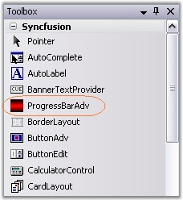
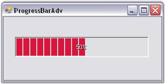

We can create a ProgressBarAdv through designer using the steps given below.
· The ProgressBarAdv control provides full support for the Windows Forms designer. Drag and drop the ProgressBarAdv control from the toolbox onto your form.

Figure 954: ProgressBarAdv in Toolbox
· Set the desired properties for the control through the Property grid.

Figure 955: ProgressBarAdv created Through Designer
· Activate the ProgressBarAdv in the desired place.
See Also
Through Code, Frequently Asked Questions